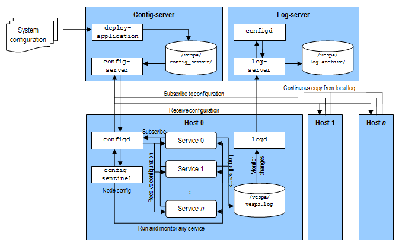
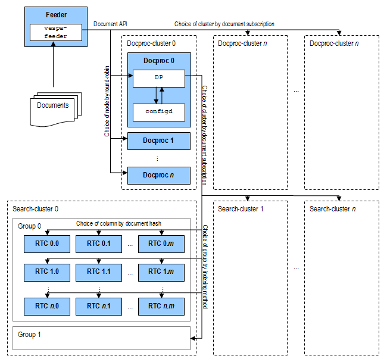
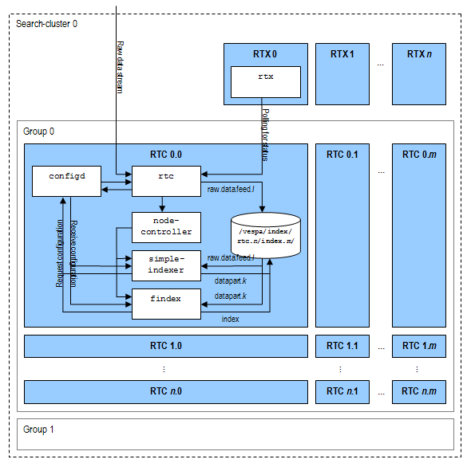
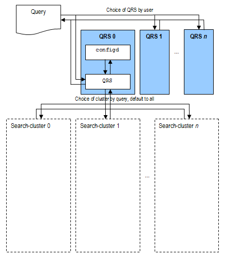
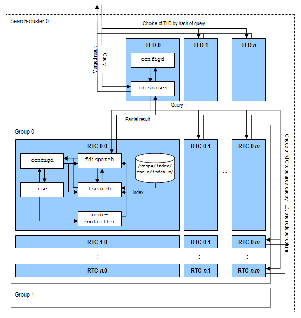

This document is intended to detail how information moves through a Vespa system. It is complete to the extent that most readers will, at the end of it, be able to conceptually understand how the system works in entirety.
By "deploying an application" we mean to run the command
deploy prepare that resides on the configserver node
of the system. Its task is to make all configuration files
available to all hosts in the system. It does this by parsing the
hand-written configuration and deriving separate configuration files
for each node, which is then accessible through the
config-server service on the configserver node.
The binary must be run on the admin node, given by
the Admin
model in services.xml.
Information follows the "config-server" part of figure 1 as follows:
hosts.xml (see Vespa setup) to setup
one or more aliases for each host that is used in services.xml.
services.xml (see
Vespa setup), and
run each child node of <services> through a separate XML parser
(i.e. <admin>, <storage> and <search>
are parsed by separate parsers). This makes the configuration framework easily extendable.
The XML syntax and structure is also validated against a set of schema files.
services.xml from
directory searchdefinitions/. These definitions are parsed to build machine-understandable
indexing language scripts (see search
definition reference) that the indexing document processor uses to perform indexing of documents.
configs/ (see configuration file reference).
$VESPA_HOME/var/db/vespa/config_server/serverdb/configs/ for distribution through the
configserver interface.
At this point all configuration files and their derivates are available on disk and in the ZooKeeper data storage
system of the configserver. The configserver takes no notice of these files until deploy activate is run.
Unless an error has occurred or some nodes have been manually shut down, all nodes in a Vespa system has at least 4 running services:
config-proxy - proxies config requests between Vespa applications and the configserver
node. All configuration are cached locally so that this service can maintain its current
configuration even if the configserver shuts down.
config-sentinel - registers itself at the local configproxy and subscribes to node
configuration. By "node configuration" we mean the configuration of what services should be run locally,
and with what parameters.
logd - monitors the file $VESPA_HOME/logs/vespa/vespa.log, which is used by all
other services, and relays everything to the log-server node of the system.
vespa_metrics_proxy - Gathers metrics from vespa
log and running services.
The command deploy activate (run on admin node) forces
the config-server on every configserver node to
reload all configuration files from the most recently deployed set
of data in ZooKeeper. All configurations are then propagated to
those processes that subscribe to them.
As these processes are started on a node in the system, information follows the "Host 0" part of figure 1 as follows:
config proxy is started. The local yinst variables
services.addr_configserver and services.port_configserver_rpc are used to
connect to the config-server service(s) running on the configserver node(s).
config-sentinel is started, and subscribes to node configuration from
config-proxy.
config-proxy subscribes to node configuration from config-server,
gets the result back, caches it and returns result to the application.
config-sentinel runs the services given in the node configuration.
config-sentinel then
config-proxy.
config-proxy subscribes to node configuration from config-server,
gets the result back, caches it and returns result to the application.
$VESPA_HOME/logs/vespa/vespa.log.
When the config-server receives an updated configuration for an already running system, it will
propagate each changed configuration to those nodes that subscribe to it. In turn, these nodes reconfigure themselves in
accordance with the new system setup.
|
 Figure 1: Information flow in Vespa when deploying an application. |
By "feeding an application" we mean sending a set of documents to a Vespa system for indexing. Receiving these documents and relaying these to the designated search nodes happens in accordance with figure 2 as follows:
vespa-feeder
or c) the HTTP Gateway.
com.yahoo.docproc.server.Server. This service, like all other services, receives
its configuration from the local config-proxy by subscription.
com.yahoo.docproc.server.Server processes the
documents it receives according to its
configuration.
Each document is distributed to all search nodes in the column that corresponds
to the document's hash.
|
 Figure 2: Information flow in Vespa when feeding an application. |
As the distributor relays an incoming document stream to a search node, the information carries according to figure 3 as follows:
proton-process running on
its search-nodes, there is no controller within the cluster that has to acknowledge or verify the
data. proton indexes the data immediately and as
soon as that the response is sent back to the sender, the
document is searchable.
|
 Figure 3: Information flow in Vespa when feeding an application, detail of search cluster. |
By "querying from an application" we mean an action by a user to search through the indexed documents that have previously been fed (see previous) to the system. The query exists as a human readable string similar to what any user of a search engine could write.
Information moves through the system according to figure 4 as follows:
qrs-binary itself. This includes any
allowed narrowing of search, such as stemming and geo-tagging.
|
 Figure 4: Information flow in Vespa when querying from an application. |
At this point the query enters one or more search clusters, and information according to figure 5 as follows:
fdispatch) is run by the
config-sentinel. This service subscribes to its
configuration from the local config-proxy, and its primary task is to relay the query in such a
manner that it covers the entire document base at the lowest possible load on each node. The TLD knows,
at all times, what queries are being processed at what nodes - load balancing is therefore simple by
dispatching to the node with the least the number of running queries in each column.
fdispatch). This dispatcher allocates a search thread in binary
proton to perform a search in the local index for the query.
The two modes of thefdispatchbinary are separable in the log files by their entry; the search node writes(...) searchnode.dispatch0.dispatch fdispatch (...)whereas the top level dispatcher writes(...) topleveldispatch fdispatch (...)
proton searches to its memory index or
local disk index index files at $VESPA_HOME/var/db/vespa/search/
and returns its results back to the local dispatcher.
|
 Figure 5: Information flow in Vespa when querying from an application, detail of search cluster. |